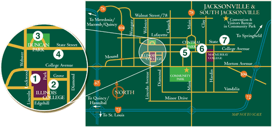
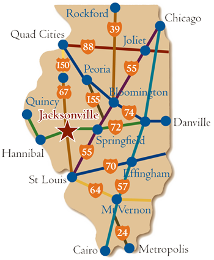

Tour driving directions & maps
When you arrive at each destination, tune your car radio to the frequency noted here or on the posted sign. If you have questions during your tour, call the Jacksonville Area Convention and Visitors Bureau at (217) 243-5678.

1. Beecher Hall at Illinois College
Tune radio to 92.5 FM
On the IC Campus Beecher Hall is located on the Illinois College campus, off Lockwood on the campus’ west side, south of the parking lot near the McGaw Fine Arts Center. The exhibit is on College Avenue, north of Beecher Hall.
2. David A. Smith House
Tune radio to 92.5 FM
Leave the parking lot at Beecher the same way you entered. Turn north onto Lockwood, and follow it to College Avenue. Turn east onto College, and take it to Park. Turn south on Park, and follow it to Grove. The house and exhibit are on the southeast corner of Park and Grove.
3. Governor Joseph Duncan Mansion
Tune radio to 92.5 FM
Head back north on Park to State Street, and turn west. Follow State to Duncan Park. The mansion and exhibit are centrally located in Duncan Park on the circular drive.
4. Newton Bateman House
Tune radio to 92.5 FM
Return to West State Street going east. The house and exhibit are on the south side of West State Street, about 3 blocks east of Duncan Park.
5. Lincoln and Slavery Mural
Tune radio to 92.5 FM
Continue east on West State Street to downtown Jacksonville. Parking is available throughout the area. On the Southwest corner of Central Park you will see the wayside exhibit. The mural is on the west side of the building adjacent to the wayside exhibit on Sandy Street.
6. 1858 Senate Race
Tune radio to 92.5 FM
Stay on the square. The exhibit is located on the Northeast corner of Central Park.
7. James Jaquess House
Tune radio to 92.5 FM
Exit the downtown area onto East State Street, heading east. The James Jaquess House and exhibit are near the corner of East State Street and Clay Street.
8. The Civil War Governor
Tune radio to 92.5 FM
Continue on East State Street and you will see the blue wayside exhibit sign near the Old Rectory playground. It is located on the north side of the street.
9. Whig Rivals and Friends
Tune radio to 92.5 FM
Continue on East State Street. The wayside exhibit will be on the north side of East State Street in front of the church at 500 E. State St.
10. General Benjamin H. Grierson Mansion
Tune radio to 92.5 FM
Continue east on State Street. Mansion is located on the north side of the street at 852 E. State St.

Jacksonville is only 25 minutes west of Springfield on Interstate 72, and 2 hours north of St. Louis on Rt 67.